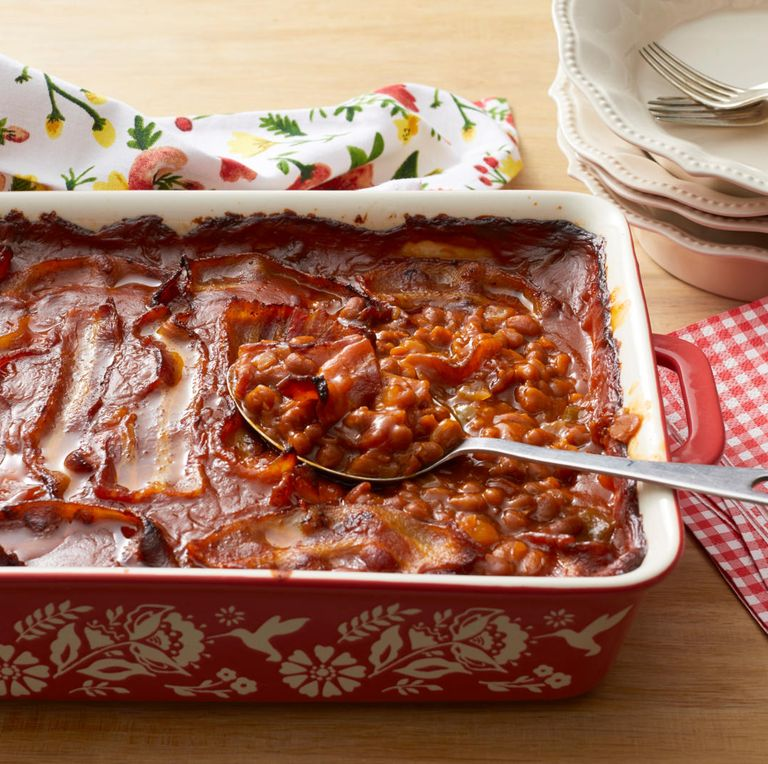

Baked Beans

Baked Beans Recipe
This Quick Southern-Style Baked Beans recipe is by Pam Anderson.
- 8 slices bacon, halved
- 1/2 medium green pepper, cut into small dice
- 3 large cans (28 ounces each) pork and beans
- 3/4 c. barbecue sauce
- 1/2 c. brown sugar
- 1/4 c. distilled or cider vinegar
- 2 tsp. dry mustard or 2 tablespoons Dijon
- Adjust oven rack to lower-middle position and heat oven to 325 degrees.
- Fry bacon in large, deep sauté pan skillet until bacon has partially cooked and released about 1/4 cup drippings. Remove bacon from pan and drain on paper towels.
- Add onions and peppers to drippings in pan and sauté until tender, about 5 minutes.
- Add beans and remaining ingredients bring to a simmer. (If skillet is not large enough, add beans and heat to a simmer then transfer to a large bowl and stir in remaining ingredients).
- Pour flavored beans into a greased 13-by 9-inch (or similar size) ovenproof pan. Top with bacon, then bake until beans are bubbly and sauce is the consistency of pancake syrup, about 2 hours. Let stand to thicken slightly and serve.